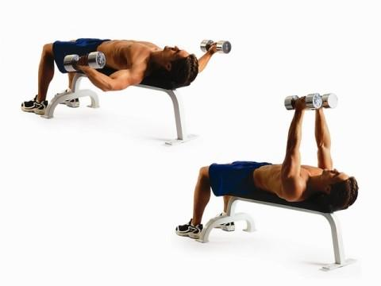
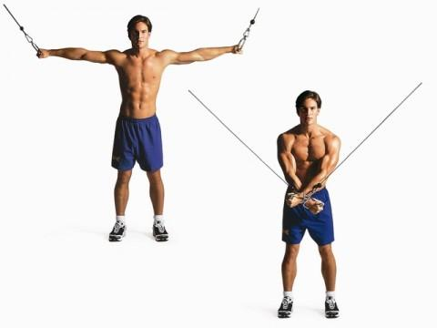

Klatka piersiowa
Do grupy mięśni w obrębie klatki piersiowej zaliczamy mięśnie piersiowe większe i mniejsze, mięsień podobojczykowy i zębaty przedni. Podstawowym ćwiczeniem, które każdy z nas kojarzy z treningiem klatki piersiowej, jest wyciskanie sztangi na ławeczce płaskiej.
Podczas wszelkiego rodzaju wyciskań oprócz mięśni klatki piersiowej bardzo dużą rolę odgrywają tricepsy oraz mięśnie naramienne. eżeli chcemy mocno wyizolować mięśnie piersiowe, wykonajmy rozpiętki, które oparte są na ruchu przywodzenia ramion, czyli podstawowym zadaniu mięśni piersiowych.
Ćwiczenia - Klatka piersiowa
Wyciskanie w leżeniu na ławce skośnej
4 x 10 powtórzeń
Połóż się plecami na ławeczce skośnej i chwyć sztangę nachwytem. Sztangę trzymaj nad klatką piersiową, ramiona lekko ugięte, następnie powoli opuść ją, odwodząc łokcie na bok, tak aby znalazły się jak najniżej. Potem powoli wróć do pozycji wyjściowej. Staraj się jak najmocniej rozciągnąć klatkę w fazie opuszczania ramion (jak najniżej opuścić sztange). Pilnuj, aby przedramiona były pionowo.

Rozpiętki na ławce poziomej
4 x 10 powtórzeń
Połóż się na ławeczce poziomej na plecach. Weź w każdą rękę sztangielkę i trzymaj je w wyprostowanych ramionach, równolegle do siebie i złączone nad klatką piersiową. Sztangielki powinny być lżejsze od tych, których używasz przy wyciskaniu. Zaczynając z tej pozycji, szerokim łukiem opuść sztangielki na boki. Ramiona trzymaj lekko ugięte w łokciach. Maksymalnie rozciągnij klatkę piersiową i powoli powróć do pozycji wyjściowej.
Ściąganie linek wyciągu górnego
4 x 10 powtórzeń
Stań w bramie (bokiem między wyciągami), tułów lekko pochyl, nogi ugięte i rozstawione na szerokość barków. Z uchwytem wyciągów górnych w każdej dłoni, unieś ramiona, dłonie skieruj wewnętrzną stroną w kierunku podłogi i lekko zegnij ramiona w łokciach. Z tej pozycji powoli szerokim łukiem opuść ramiona, aż do skrzyżowania ich przed sobą. Następnie powoli wracaj do pozycji wyjściowej.
